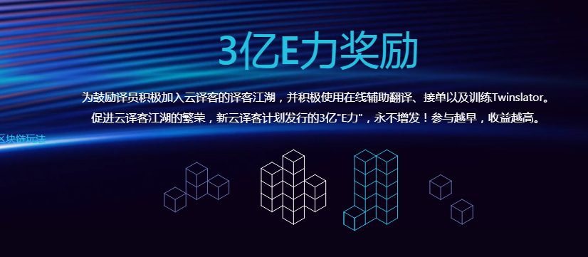

Twinslator Lab是云译客为打造第3产能推出的全新功能，译员加入后即可激活专属机翻引擎训练特权，第一时间拥有专属Twinslator机器翻译引擎。 人赋慧于机器，机器赋能于人。完美融合在线辅助翻译、机器翻译、Twinslator自定义引擎。具有以下特色：
云译客和传神旗下首款区块链产品言值录深度合作，旨在为译员打造一个集“区块链+工作+翻译过程资产+消费”于一体的译客江湖。 让译员在使用在线辅助翻译功能和打造Twinslator的过程中认知和体验到区块链的价值和优势。为鼓励译员积极加入云译客的译客江湖，并积极使用在线辅助翻译、接单以及训练Twinslator。 促进云译客江湖的繁荣，新云译客计划发行的3亿"E力"，永不增发！参与越早，收益越高。
订单广场是云译客为增加译员收入而设计，除传统的笔译订单外， 新增了基于快速阅读场景的快译订单以及人机共译协同等多种订单类型。